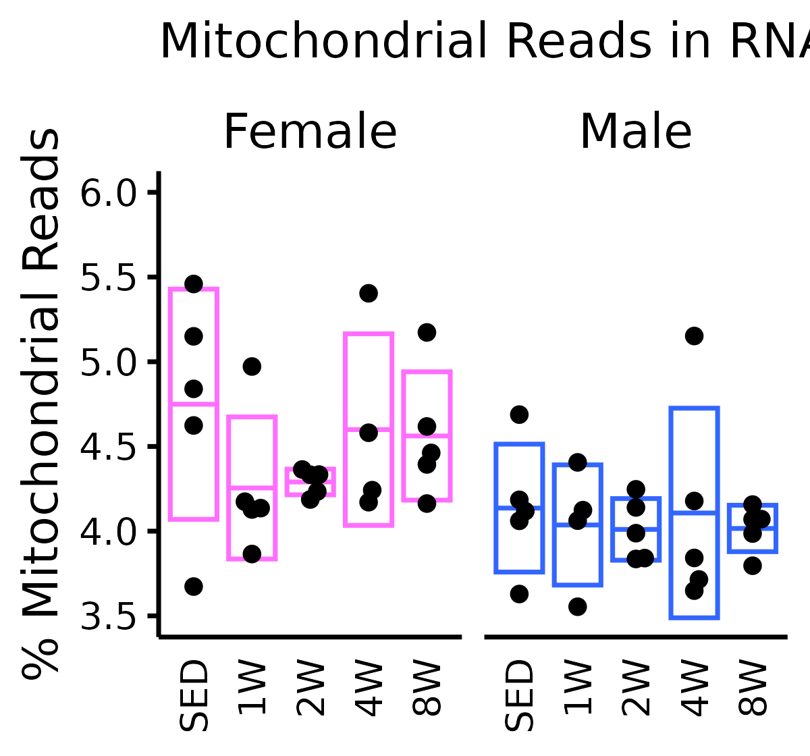
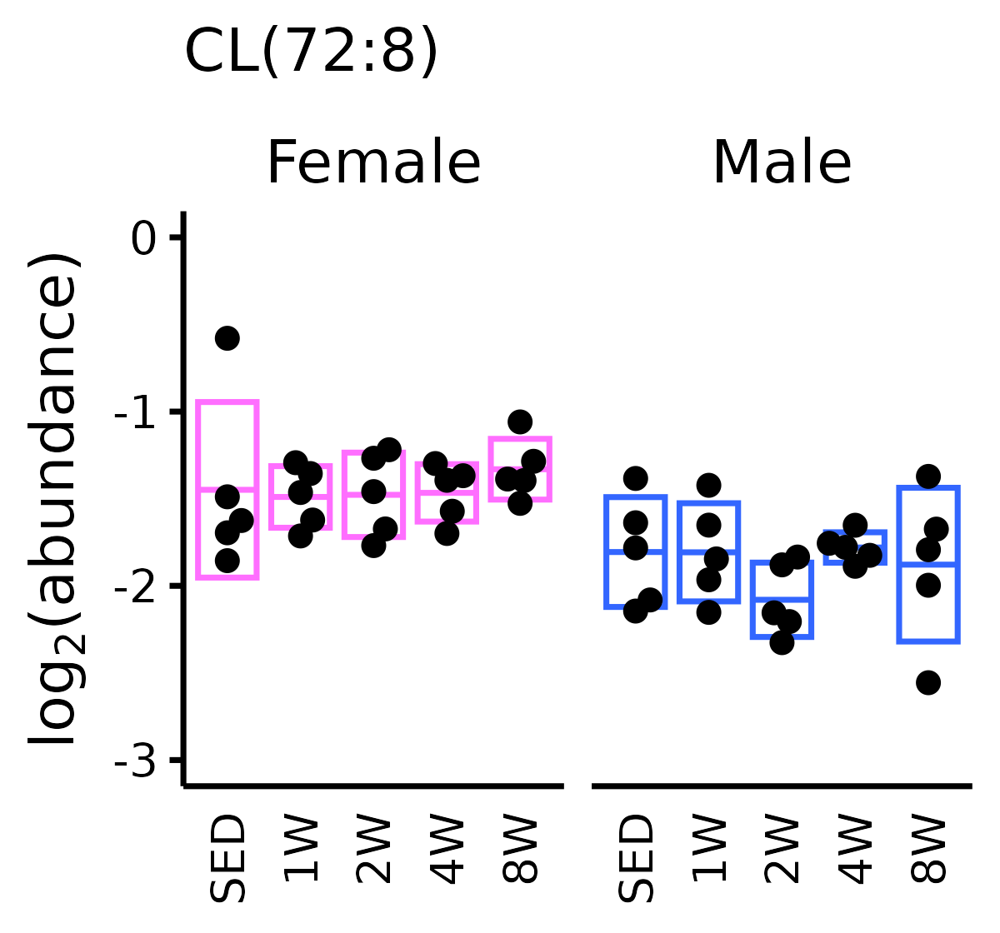

vignettes/articles/plot_mito_reads_and_cardiolipin.Rmd
plot_mito_reads_and_cardiolipin.RmdThis article generates plots of % mitochondrial reads and cardiolipin (Fig. 5C).
library(MotrpacRatTraining6moWATData)
library(MotrpacRatTraining6moData) # TRNSCRPT_META
library(dplyr)
library(ggplot2)
library(Biobase)
library(ggbeeswarm)
save_plots <- dir.exists(paths = file.path("..", "..", "plots"))
# Reformat data for plotting
mito <- TRNSCRPT_META %>%
filter(grepl("white adipose", Tissue, ignore.case = TRUE)) %>%
dplyr::rename(bid = BID) %>%
inner_join(pData(TRNSCRPT_EXP), by = "bid") %>%
mutate(prop_mt = pct_chrM / 100)
# Plot % mitochondrial reads
mito_reads <- ggplot(mito, aes(x = timepoint, y = pct_chrM)) +
stat_summary(fun.data = "mean_sdl",
fun.args = list(mult = 1),
mapping = aes(color = sex),
show.legend = FALSE,
geom = "crossbar", width = 0.8,
na.rm = TRUE, fatten = 1, size = 0.3) +
ggbeeswarm::geom_beeswarm(size = 0.5, cex = 3, groupOnX = TRUE) +
scale_color_manual(values = c("#ff6eff", "#3366ff"),
breaks = c("Female", "Male")) +
guides(color = guide_none()) +
facet_wrap(~ sex, nrow = 1) +
scale_y_continuous(limits = c(3.4, 6)) +
coord_cartesian(ylim = c(3.5, NA)) +
labs(x = NULL,
y = "% Mitochondrial Reads",
title = "Mitochondrial Reads in RNA-Seq") +
theme_minimal(base_size = 6) +
theme(axis.text.x = element_text(color = "black",
size = 5, angle = 90,
vjust = 0.5, hjust = 1),
axis.text.y = element_text(color = "black", size = 5),
axis.title.y = element_text(color = "black", size = 6.5),
plot.title = element_text(color = "black",size = 6.5),
panel.grid = element_blank(),
axis.ticks.y = element_line(color = "black", size = 0.3),
axis.line = element_line(color = "black", size = 0.3),
plot.background = element_rect(fill = "white",
color = NA),
legend.text = element_text(color = "black", size = 5),
legend.title = element_text(color = "black", size = 5),
strip.text = element_text(color = "black", size = 6.5))
mito_reads
ggsave(file.path("..", "..", "plots", "pct_mito_reads.pdf"), mito_reads,
height = 1.4, width = 1.5, family = "ArialMT")
## Testing
# Males
kruskal.test(prop_mt ~ timepoint, data = filter(mito, sex == "Male"))
#>
#> Kruskal-Wallis rank sum test
#>
#> data: prop_mt by timepoint
#> Kruskal-Wallis chi-squared = 0.433, df = 4, p-value = 0.9797
# Kruskal-Wallis chi-squared = 0.433, df = 4, p-value = 0.9797
# Females
kruskal.test(prop_mt ~ timepoint, data = filter(mito, sex == "Female"))
#>
#> Kruskal-Wallis rank sum test
#>
#> data: prop_mt by timepoint
#> Kruskal-Wallis chi-squared = 5.417, df = 4, p-value = 0.2471
# Kruskal-Wallis chi-squared = 5.417, df = 4, p-value = 0.2471
# Plot cardiolipin
METAB_EXP$cardiolipin <- exprs(METAB_EXP)["CL(72:8)_feature1", ]
cl <- ggplot(pData(METAB_EXP),
aes(x = timepoint, y = cardiolipin)) +
stat_summary(fun.data = "mean_sdl",
fun.args = list(mult = 1),
mapping = aes(color = sex),
show.legend = FALSE,
geom = "crossbar", width = 0.8,
na.rm = TRUE, fatten = 1, size = 0.3) +
scale_color_manual(values = c("#ff6eff", "#3366ff"),
breaks = c("Female", "Male")) +
ggbeeswarm::geom_beeswarm(size = 0.6, cex = 4.5, groupOnX = TRUE) +
facet_wrap(~ sex, nrow = 1) +
lims(y = c(-3, 0)) +
labs(x = NULL,
y = latex2exp::TeX("log$_2$(abundance)"),
title = "CL(72:8)") +
theme_minimal(base_size = 6) +
theme(axis.text.x = element_text(color = "black", size = 5, angle = 90,
vjust = 0.5, hjust = 1),
axis.text.y = element_text(color = "black", size = 5),
axis.title.y = element_text(color = "black", size = 6.5),
plot.title = element_text(color = "black", size = 6.5),
panel.grid = element_blank(),
axis.ticks.y = element_line(color = "black", size = 0.3),
axis.line = element_line(color = "black", size = 0.3),
plot.background = element_rect(fill = "white",
color = NA),
legend.text = element_text(color = "black", size = 5),
legend.title = element_text(color = "black", size = 5),
strip.text = element_text(color = "black", size = 6.5))
cl
ggsave(file.path("..", "..", "plots", "METAB_cardiolipin.pdf"), cl,
height = 1.4, width = 1.5, family = "ArialMT")